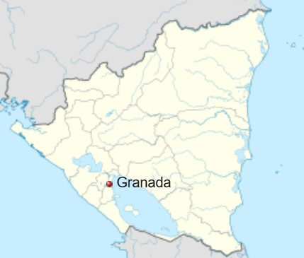

Santiago de Granada, o simplemente Granada, es un municipio y una ciudad de la República de Nicaragua, cabecera del departamento de Granada. La ciudad fue fundada en 1524, siendo por lo tanto, una de las más antiguas del país y de América Central. Granada fue candidata a ser la capital de la República de Nicaragua; la ciudad es conocida internacionalmente por su arquitectura colonial, además de ser el centro de encuentro de los poetas, especialmente en el Festival internacional de poesía de Granada, lo cual le ha válido el título de La París de América Central. Granada también es conocida como La Gran Sultana, por su apariencia morisca, a diferencia de León, su ciudad hermanada y rival histórica, la cual tiene apariencias más castellanas.
A diferencia de otras poblaciones que aseveran lo mismo, la ciudad de Granada no solo fue el asentamiento de la conquista, sino también una ciudad matriculada en los registros oficiales de la Corona de Aragón y el Reino de Castilla en España.[cita requerida] Durante la época colonial, Granada fue una ciudad hermanada del asentamiento de Antigua Guatemala, mantuvo un floreciente nivel de comercio con puertos en el Océano Atlántico a través del lago Cocibolca y el río San Juan, y fue objeto de ataques de piratas ingleses, franceses y holandeses que intentaron sin éxito tomar el control del asentamiento navegando por el río San Juan. La ciudad fue destruida por las tropas filibusteras de William Walker en 1856, durante la guerra Nacional de Nicaragua. Uno de los generales de Walker, Charles Frederick Henningsen, incendió la ciudad antes de escapar, destruyó gran parte de la arquitectura de la época colonial e inscribió las palabras "Aquí estaba Granada" en las ruinas antes de partir. Durante muchos años Granada disputó con León su hegemonía como ciudad principal de Nicaragua. La ciudad de Granada fue favorecida por los conservadores, mientras que León fue favorecida por los liberales. Durante muchos años hubo un conflicto que en ocasiones se tornó bastante violento entre las familias de las ciudades y las facciones políticas. A mediados del siglo xix se acordó un sitio de compromiso y finalmente se estableció la capital en Managua entre ambas ciudades.